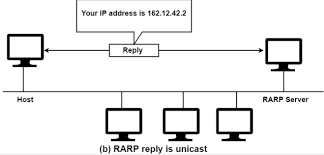

Reverse ARP (RARP - Ters ARP), bir cihazın kendi MAC adresine karşılık gelen IP adresini öğrenmesini sağlayan eski bir protokoldür. Normal ARP'nin tam tersine çalışır; yani, cihaz MAC adresini bilir ancak IP adresini bilmez.
Yeni açılan veya diskte IP adresi saklayamayan bir cihaz, ağdaki bir RARP sunucusuna MAC adresini içeren bir RARP isteği (RARP Request) gönderir.
Ağ yöneticisi tarafından önceden yapılandırılmış bir RARP sunucusu, MAC adresine karşılık gelen IP adresini içeren RARP yanıtı (RARP Reply) gönderir.
ihaz, aldığı IP adresini kullanarak ağ iletişimine başlar.
- Disksiz (diskless) cihazlar: IP adreslerini kendi başlarına depolayamadıkları için RARP kullanarak ağ üzerinden adres alırlar.
- Eski sistemler: Günümüzde DHCP gibi daha gelişmiş protokoller kullanıldığı için RARP artık yaygın değildir.
RARP sunucusu gerektirir: Her ağda en az bir RARP sunucusunun yapılandırılması gerekir.
Sadece IP adresi sağlar: DHCP gibi ek bilgiler (alt ağ maskesi, varsayılan ağ geçidi, DNS) sağlamaz.
Yerini DHCP ve BOOTP aldı: Daha esnek ve yönetimi kolay protokoller olan DHCP (Dynamic Host Configuration Protocol) ve BOOTP (Bootstrap Protocol), RARP’nin yerini almıştır.
Ana Sayfaya Dön